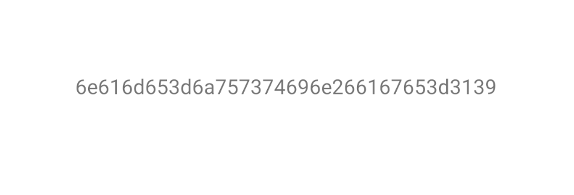

十二、JNI开发
一 、JNI介绍和安装
1.1 JNI介绍
JNI，java native interface ，Java本地开发接口，实现在安卓中JAVA和C语言之间的相互调用。

1.2 NDK安装
NDK是JNI开发的工具包
NDK，Native Develop Kits，本地开发工具（在Android Studio中下载即可）

二、创建JNI项目
# 普通项目：Empty Activity（Java）
# jni项目：Native C++（Java + C）
创建的项目多了一些内容和配置（基于C++实现了一个算法，并在Java中进行了调用）。
- 有了默认配置后，我们就不需要自己的手动配置了。
- 会生成一些我们用不到的默认文件，等我们学会自己再回来删除他默认的这些文件。
2.1 创建项目


2.2 快速开发
# 1 第一步：在cpp目录下，新建c文件[注意选择c结尾]
#include <jni.h>
JNIEXPORT jint
JNICALL Java_com_justin_s8day12_Utils_v1(JNIEnv *env, jclass clazz,jint v1,jint v2) {
return v1+v2;
}
# 2 第二步：编写Java，新建一个Java类，编写静态方法
package com.justin.s8day12;
public class Utils {
public static native int v1(int a1,int a2);
}
# 3 第三步：在java类中，引入静态文件
static {
System.loadLibrary("utils");
}
# 4 第四步：在CMakeLists.txt中加入编写的c文件
add_library(
utils # 起个名字，我们叫utils
SHARED
# 指定我们新建的c文件
utils.c)
target_link_libraries(
utils# 加入我们自己写的utils，空格分割，写多个
${log-lib})
# 5 在java代码中调用
tv.setText(String.valueOf(Utils.v1(33,44)));


三 、JNI案例
3.1 类型

类型对应关系

| Java 类型 | Native 类型 | JNI 签名 |
|---|---|---|
| boolean | jboolean | Z |
| byte | jbyte | B |
| char | jchar | C |
| short | jshort | S |
| int | jint | I |
| long | jlong | J |
| float | jfloat | F |
| double | jdouble | D |
| byte[] | jbyteArray | [B |
| char[] | jcharArray | [C |
| short[] | jshortArray | [S |
| int[] | jintArray | [I |
| long[] | jlongArray | [L |
| float[] | jfloatArray | [F |
| double[] | jdoubleArray | [D |
| Java 类 (例: String) | jstring/jobject | L 全类名; (例: Ljava/lang/String; |
| Java 方法 (例: start(String path, long pos, long duration)) | Native 方法 (例: start(jstring path, jlong pos, jlong duration)) | (参数签名...) 返回值签名 (例: (Ljava/lang/String;JJ)V) |
| Object | java/lang/Object; | Ljava/lang/Object; |
| Context | android.content.Context | Landroid/content/Context; |
| Map | java.util.Map | Ljava/util/Map; |
| Chain | okhttp3.Interceptor$Chain | Lokhttp3.Interceptor$Chain; |
- 对于自定义类
com/example/MyClass，签名应该是：(Lcom/example/MyClass;)Ljava/lang/String;
L开始 地址 分号结束;
-
关于
$符号 -
因为当前Chain是出现在子类中，所以在进行绑定时候需要添加$

在 Frida 的 JavaScript API 中，当你使用
Java.use来引用 Java 类并尝试 hook 其方法时，需要准确地指定类和方法签名。这里的$符号用于表示内部类或嵌套类。
3.2 Java调用C案例
目录结构

3.2.1数字处理
MainActivity.java
tv.setText(String.valueOf(Utils.v1(1, 2)));
Utils.java
public static native int v1(int a1,int a2);
utils.c
#include <jni.h>
JNIEXPORT jint
JNICALL Java_com_justin_s8day12_Utils_v1(JNIEnv *env, jclass clazz,jint v1,jint v2) {
return v1+v2;
}
3.2.2 通过指针修改字符串
MainActivity.java
tv.setText(String.valueOf(Utils.v2("abcdefg")));
Utils.java
public static native String v2(String s);
utils.c
JNIEXPORT jstring JNICALL
Java_com_justin_s8day12_Utils_v2(JNIEnv *env, jclass clazz, jstring s) {
// char info[] = {'j','u','s','t','i','n'};
// 通过env指针，取到GetStringUTFChars结构体，初始化得到char指针
char *info = (*env)->GetStringUTFChars(env, s, 0);
syslog(LOG_ERR, "%s", info);
info += 1;
*info = 'j'; // 修改第一个位置字符为j
info += 3;
*info = 'j';// 修改第三个位置字符为j
info -= 4; //指针回退
syslog(LOG_ERR, "%s", info);
return (*env)->NewStringUTF(env, info); // 把char类型指针，再转成字符串类型返回
}
3.2.3 通过数组修改字符串
MainActivity.java
tv.setText(String.valueOf(Utils.v3("abcdefg")));
Utils.java
public static native String v3(String s);
utils.c
JNIEXPORT jstring JNICALL
Java_com_justin_s8day12_Utils_v3(JNIEnv *env, jclass clazz, jstring s) {
// 字符串数组
char *info = (*env)->GetStringUTFChars(env, s, 0);
info[0] = 'j'; // 指针直接可以变成数组取值赋值
info[1] = 'j';
return (*env)->NewStringUTF(env, info);
}
-
char *info = (*env)->GetStringUTFChars(env, s, 0); -
这行代码的作用是将传入的
jstring类型的参数s转换为 C 风格的字符串（即以 null 结尾的字符数组）。GetStringUTFChars函数返回一个指向该字符串的指针。 - 第三个参数是一个布尔类型的指针，用来指示是否需要释放这个字符串。如果设置为
JNI_TRUE，则 JNI 环境会确保当本地方法返回时自动释放该字符串；如果是JNI_FALSE或者NULL，那么你需要手动调用ReleaseStringUTFChars来释放。
3.2.4 字符串拼接
MainActivity.java
tv.setText(String.valueOf(Utils.v4("a", "b")));
Utils.java
public static native String v4(String name, String role);
utils.c
#include <jni.h>
#include <syslog.h>
#include <malloc.h>
#include <string.h>
// 定义一个获取字符数组长度的函数
int GetStringLen(char *dataString) {
int count = 0;
for (int i = 0; dataString[i] != '\0'; i++) {
count += 1;
}
return count;
}
JNIEXPORT jstring JNICALL
Java_com_justin_s8day12_Utils_v4(JNIEnv *env, jclass clazz, jstring name, jstring role) {
// 字符数组=指针
char *nameString = (*env)->GetStringUTFChars(env, name, 0); // 先取到名字
char *roleString = (*env)->GetStringUTFChars(env, role, 0); // 再取到角色
// 定义指针，分配内容
char *result = malloc(GetStringLen(nameString) + GetStringLen(roleString) + 1);
// char *result = malloc(strlen(nameString) + strlen(roleString) + 1);
// 把名字copy到新定义的指针中
strcpy(result, nameString);
// 把角色拼接到后面
strcat(result, roleString);
syslog(LOG_ERR, "%s", result);
return (*env)->NewStringUTF(env, result);
}
结果

3.2.5 字符处理-返回十六进制
MainActivity.java
String n5 = Utils.v5("name=justin&age=19");
Utils.java
public static native String v5(String data);
utils.c
#include <jni.h>
#include <string.h>
#include <syslog.h>
#include<stdlib.h>
int GetStringLen(char *dataString) {
int count = 0;
for (int i = 0; dataString[i] != '\0'; i++) {
count += 1;
}
return count;
}
JNIEXPORT jstring
JNICALL
Java_com_nb_s4luffy_EncryptUtils_v5(JNIEnv *env, jclass clazz, jstring data) {
// "name=justin&age=19"
char *urlParams = (*env)->GetStringUTFChars(env, data, 0);
int size = GetStringLen(urlParams);
// v34 = {1,2,,,,,,,,,,,}
char v34[size * 2];
char *v28 = v34;
for (int i = 0; urlParams[i] != '\0'; i++) {
//syslog(LOG_ERR, "%02x", urlParams[i]); 转成16进制，不足2位的0填补
sprintf(v28, "%02x", urlParams[i]);
v28 += 2;
}
return (*env)->NewStringUTF(env, v34);
}
sprintf
%% 印出百分比符号，不转换。
%c 整数转成对应的 ASCII 字元。
%d 整数转成十进位。
%f 倍精确度数字转成浮点数。
%o 整数转成八进位。
%s 整数转成字符串。
%x 整数转成小写十六进位。
%X 整数转成大写十六进位
3.2.6 字节处理
MainActivity.java
tv.setText(String.valueOf(Utils.v6("name=justin&age=19".getBytes())));
Utils.java
public static native String v6(byte[] data);
utils.c
JNIEXPORT jstring JNICALL
Java_com_justin_s8day12_Utils_v6(JNIEnv *env, jclass clazz, jbyteArray data) {
// jbyte *byteArray = (*env)->GetByteArrayElements(env, data, 0);
char *byteArray = (*env)->GetByteArrayElements(env, data, 0);
int size = (*env)->GetArrayLength(env, data);
char v34[size * 2];
char *v28 = v34;
for (int i = 0; byteArray[i] != '\0'; i++) {
syslog(LOG_ERR, "%02x", byteArray[i]);
sprintf(v28, "%02x", byteArray[i]);
v28 += 2;
}
return (*env)->NewStringUTF(env, v34);
}
(*env)->GetByteArrayElements(env, data, 0)
这句代码的作用是从 Java 层的 byte[] 数组获取指向其元素的指针。具体来说，这行代码用于将一个 Java 字节数组转换为本地应用可以直接操作的 C/C++ 风格的字节数组。
3.2.7 字节处理-案例
Utils.java
public static native String v7(byte[] data);
utils.c
JNIEXPORT jstring JNICALL
Java_com_justin_s8day12_Utils_v7(JNIEnv *env, jclass clazz, jbyteArray data) {
char *byteArray = (*env)->GetByteArrayElements(env, data, 0);
int size = (*env)->GetArrayLength(env, data);
char v34[size * 2];
char *v28 = v34;
int v29 = 0;
do {
sprintf(v28, "%02x", byteArray[v29++]);
v28 += 2;
} while (v29 != size);
return (*env)->NewStringUTF(env, v34);
}
3.3 C调Java案例
3.3.1 静态方法
MainActivity.java
tv.setText(String.valueOf(Utils.v8()));
Utils.java
public static native String v8();
utils.c
JNIEXPORT jstring JNICALL
Java_com_justin_s8day12_Utils_v8(JNIEnv *env, jclass clazz) {
// 找到类
jclass cls = (*env)->FindClass(env, "com/example/jniapplication/Foo");
// 找到静态方法--->没有参数的方法
jmethodID method1 = (*env)->GetStaticMethodID(env, cls, "getSign1", "()Ljava/lang/String;");
// 如果有重载( 有两个int参数) ,括号里是参数，后面是返回值，参数详见[类型]
jmethodID method2 = (*env)->GetStaticMethodID(env, cls, "getSign2", "(II)Ljava/lang/String;");
jmethodID method3 = (*env)->GetStaticMethodID(env, cls, "getSign3",
"(Ljava/lang/String;)Ljava/lang/String;");
jmethodID method4 = (*env)->GetStaticMethodID(env, cls, "getSign4", "(Ljava/lang/String;I)I");
// 执行方法(method1)
jstring res1 = (*env)->CallStaticObjectMethod(env, cls, method1);
// 执行方法(method2 传参数)
jstring res2 = (*env)->CallStaticObjectMethod(env, cls, method2, 22, 33);
//执行方法(method3 传参数,把c的字符串转成jstring类型)
jstring res3 = (*env)->CallStaticObjectMethod(env, cls, method3,(*env)->NewStringUTF(env, "justin"));
//执行方法(method4 传参数,把c的字符串转成jstring类型)
jint res4 = (*env)->CallStaticIntMethod(env, cls, method4, (*env)->NewStringUTF(env, "justin"),18);
// 可以做其他操作，把jstring转成c的字符串，处理完，再转成jstring类型
char *p1 = (*env)->GetStringUTFChars(env, res1, 0);
char *p2 = (*env)->GetStringUTFChars(env, res2, 0);
char *p3 = (*env)->GetStringUTFChars(env, res3, 0);
char *result = malloc(50);
strcat(result,p1);
strcat(result,p2);
strcat(result,p3);
// return (*env)->NewStringUTF(env, result);
return res1;
}
Foo.java

package com.justin.s8day12;
public class Foo {
public static String getSign1(){
return "sign001";
}
public static String getSign2(int a,int b){
return "sign002";
}
public static String getSign3(String s){
return "sign003";
}
public static int getSign4(String prev, int v1) {
return 100;
}
}
注意：
如果c当前要调用的java方法有重载(俩个方法名一样)，那么c中是根据参数和返回值不同而确认调用的是哪一个(也就是根据签名不同进行确认)
Foo.java
package com.justin.s8day12;
public class Foo {
public static String getSign(String s){
return "sign003";
}
public static int getSign(String prev, int v1) {
return 100;
}
}
utils.c
JNIEXPORT jstring
JNICALL
Java_com_example_jniapplication_Utils_v8(JNIEnv *env, jclass clazz) {
// 找到类
jclass cls = (*env)->FindClass(env, "com/example/jniapplication/Foo");
// 找到静态方法--->参数与返回值类型均为String
jmethodID method3 = (*env)->GetStaticMethodID(env, cls, "getSign",
"(Ljava/lang/String;)Ljava/lang/String;");
// 找到静态方法--->参数1位String。参数2位Int 返回值类型为Int
jmethodID method4 = (*env)->GetStaticMethodID(env, cls, "getSign", "(Ljava/lang/String;I)I");
//执行方法(method3 传参数,把c的字符串转成jstring类型)
jstring res3 = (*env)->CallStaticObjectMethod(env, cls, method3,(*env)->NewStringUTF(env, "justin"));
//执行方法(method4 传参数,把c的字符串转成jstring类型)
jint res4 = (*env)->CallStaticIntMethod(env, cls, method4, (*env)->NewStringUTF(env, "justin"),18);
// 可以做其他操作，把jstring转成c的字符串，处理完，再转成jstring类型
char *p3 = (*env)->GetStringUTFChars(env, res3, 0);
char *p4 = (*env)->GetStringUTFChars(env, res4, 0);
char *result = malloc(50);
strcat(result,p3);
strcat(result,p4);
// return (*env)->NewStringUTF(env, result);
return res3;
}
3.3.2 成员方法
MainActivity.java
tv.setText(String.valueOf(Utils.v9()));
Utils.java
public static native String v9();
utils.c
JNIEXPORT jstring JNICALL
Java_com_justin_s8day12_Utils_v9(JNIEnv *env, jclass clazz) {
// 找到类
jclass cls = (*env)->FindClass(env, "com/example/jniapplication/Foo");
// 找到构造方法
jmethodID init = (*env)->GetMethodID(env, cls, "<init>", "(Ljava/lang/String;)V");
// 实例化对象 new SignQuery2(...)
jobject cls_obj = (*env)->NewObject(env, cls, init, (*env)->NewStringUTF(env, "justin"));
// 找到方法
jmethodID method1 = (*env)->GetMethodID(env, cls, " ", "()Ljava/lang/String;");
// jmethodID method2 = (*env)->GetMethodID(env, cls, "ShowName", "(I)Ljava/lang/String;");
// jmethodID method3 = (*env)->GetMethodID(env, cls, "ShowName","(Ljava/lang/String;)Ljava/lang/String;");
// jmethodID method4 = (*env)->GetMethodID(env, cls, "ShowName", "(Ljava/lang/String;I)I");
// 执行方法
jstring res1 = (*env)->CallObjectMethod(env, cls_obj, method1);
// jstring res2 = (*env)->CallObjectMethod(env, cls_obj, method2, 100);
// jstring res3 = (*env)->CallObjectMethod(env,cls_obj,method3,(*env)->NewStringUTF(env, "hahahahh"));
// jint res4 = (*env)->CallIntMethod(env,cls_obj,method4,(*env)->NewStringUTF(env, "hahahahh"),18);
// char *p1 = (*env)->GetStringUTFChars(env, res1, 0);
// return (*env)->NewStringUTF(env, p1);
return res1;
}
Foo.java
package com.justin.s8day12;
public class Foo {
public String name;
public static String getSign(){
return "sign001";
}
public static String getSign(int a,int b){
return "sign002";
}
public static String getSign(String s){
return "sign003";
}
public static int getSign(String prev, int v1) {
return 100;
}
public Foo(String name){
this.name=name;
}
// 成员方法
public String ShowName(){
return this.name;
}
}
3.4 静态注册和动态注册
3.4.1 静态注册
上述编写的C语言的函数和Java的对应关系，在函数名上就可以体现，例如：
Java_com_justin_s8day12_Utils_v9
Java_包名_类名_方法名
- com_justin_s8day12 包名
- Utils 类名
- v9 方法名
这种称为静态注册，如果是静态注册，那么在逆向时，是比较方便的，直接可以找到函数在C中的实现。例如：车智赢。


3.4.2 动态注册
逆向查找： JNI_OnLoad
Dnamic.java
package com.justin.s8day12;
public class Dynamic {
static {
System.loadLibrary("dynamic");
}
public static native int vv1(int a1, int a2);
public static native int vv2(String s);
}

dnamic.c
#include <jni.h>
jint plus1(JNIEnv *env, jobject obj, jint v1, jint v2) {
return v1 + v2;
}
jint plus2(JNIEnv *env, jobject obj, jstring s1) {
return 100;
}
static JNINativeMethod gMethods[] = {
{"vv1", "(II)I", (void *) plus1},
{"vv2", "(Ljava/lang/String;)I", (void *) plus2},
};
JNIEXPORT jint JNICALL JNI_OnLoad(JavaVM *vm, void *reserved) {
JNIEnv *env = NULL;
// 在java虚拟机中获取env
if ((*vm)->GetEnv(vm, (void **) &env, JNI_VERSION_1_6) != JNI_OK) {
return JNI_ERR;
}
// ----上面都是固定的----
// 找到Java中的类
jclass clazz = (*env)->FindClass(env, "com/justin/s8day12/Dynamic");
// 将类中的方法注册到JNI中 (RegisterNatives)
int res = (*env)->RegisterNatives(env, clazz, gMethods, 2);
// ----下面都是固定的----
if (res < 0) {
return JNI_ERR;
}
return JNI_VERSION_1_6;
}
说明：
(*env)->RegisterNatives(env, clazz, gMethods, 2);
- 参数 2 gMethods 写对应关系(c中和java中函数的对应关系)
- 参数3 是当前绑定了几个方法


这种情况下，在逆向时，就不能直接找对应关系了，就需要去找jni_onload


四、反编译自己的app
# 1 反编译 apk
-把咱们自己写的apk，拖动到jadx中即可
# 2 反编译so文件
-使用压缩工具把 apk解压
-进入lib的arm64-v8a目录，看到so文件
-把so文件拖动到IDA中
-选择exports导出
-双击函数名，看到汇编
-按F5，把混编进行反编译
# 3 静态注册---》 反编译自己app----》找到了jni调用位置---》通过System.loadLibrary("utils")---》确定是哪个so文件---》去so文件中，通过 静态注册方案找 v9 对应的c中的函数---》很容易找到
# 4 动态注册
-反编译so后，找JNI_OnLoad
-找到对应关系，双击进入，按F5，查看源代码